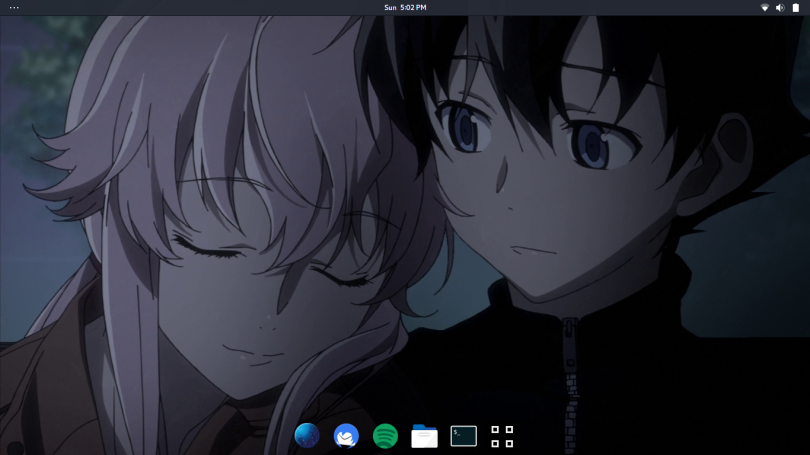

QEMU > Virtualbox

Ok, I’m not an expert on this . So , feel free to correct me ^_^
So, I set up Manjaro Linux on my computer and was very happy with it (screenshot of my Manjaro Linux desktop is the featured image ❤ ).I wanted to test out Kali Linux.A dear friend of mine, Shashank, is a pro user of it (His blog.Don’t bother checking it out 😛 ).He said that he runs it on Virtualbox on windows. I’ve run OS-es on virtual box before on my old computer .They were all 32 bit systems and were not as graphics intensive.They ran ok on it.But I never really had much use of it other than to test out and see how different desktop environments felt.
So, I was trying to run Kali Linux on virtual box the other day and it was lagging like hell.Then I remembered this awesome software called QEMU ( had seen a video about it on Youtube 😛 ). Apparently, QEMU takes advantage of this software called KVM which consists of a kernel module that allows the guest code of the OS on the virtualization software to run directly on the host’s computer .This gives us better performance in the virtual environment.
So, I installed QEMU ran kali Linux on it with kvm enabled and got SO much better performance .Note that QEMU doesn’t provide a GUI to manage virtual machines.There are several gui front-ends available for QEMU though.
I first heard about KVM when I was installing android studio. They said that my cpu supports kvm and therefore I should use it to get better performance on the android studio emulator.
Note that KVM works only on certain supported 64 bit processors, but it should work on most new systems imo.
you can find more info about these softwares here:
KVM , Arch wiki on QEMU , QEMU
Originally published at : Balu's Blog